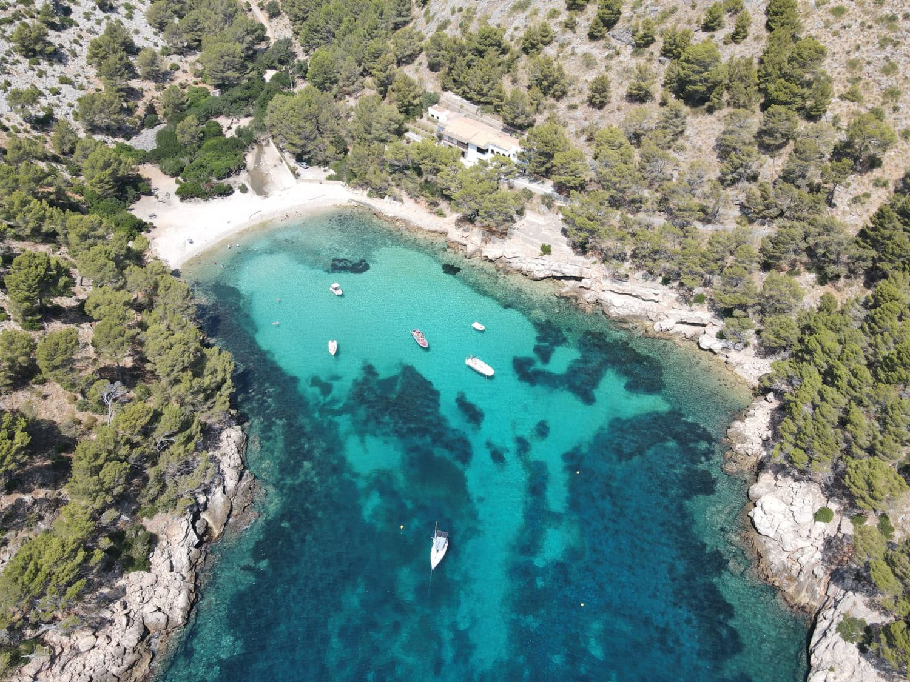

Una jornada completa para explorar la costa más espectacular del norte de Mallorca. Siete horas y cuatro paradas que permiten llegar a rincones más remotos como Cala Figuera, pasar más tiempo en el agua y disfrutar del mar sin prisas, con aperitivo y comida servidos a bordo.
Zarpamos y navegamos por la bahía, junto a los veleros, las playas del pueblo, la Base Militar y la Fortaleza con su faro, antes de recorrer la costa de Formentor muy cerca de los acantilados.
Fondeamos entre 30 y 45 minutos para el primer baño, snorkel, paddle surf y kayak. Servimos un aperitivo con patatas fritas y sandía fresca para refrescarse antes de continuar.
Tras más de una hora de navegación entre acantilados y aguas cristalinas, llegamos a una de las calas más salvajes y espectaculares del norte de Mallorca. Servimos la comida a bordo mientras seguís nadando o disfrutando de las actividades en absoluta tranquilidad.
Continuamos hasta otra de las calas más protegidas y cristalinas de la zona, rodeada de naturaleza, para descubrir un rincón distinto al de la mañana.
Un último baño refrescante frente a la Fortaleza antes de poner rumbo al Club Náutico de Port de Pollença.